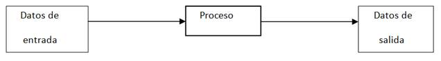
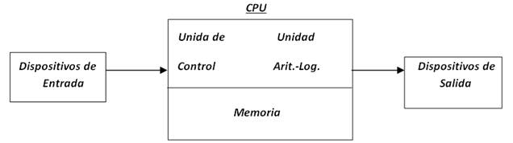
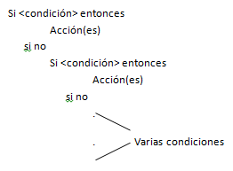
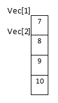

El desarrollo de algoritmos es un tema fundamental en el diseño de programas por lo cual el alumno debe tener buenas bases que le sirvan para poder desarrollarlos de manera fácil y rápida.
La computadora no solamente es una máquina que puede realizar procesos para darnos resultados, sin que tengamos la noción exacta de las operaciones que realiza para llegar a esos resultados. Con la computadora además de lo anterior también podemos diseñar soluciones a la medida, de problemas específicos que se nos presenten. Más aún, si estos involucran operaciones matemáticas complejas y/o repetitivas, o requieren del manejo de un volumen muy grande de datos.
El diseño de soluciones a la medida de nuestros problemas, requiere como en otras disciplinas una metodología que nos enseñe de manera gradual, la forma de llegar a estas soluciones.
La solución de problemas mediante el uso de microcontroladores y computador nos lleva a desarrollar programas que guíen la ejecución de instrucciones o pasos que permitan al dispositivo llevar a cabo los cálculos y las acciones requeridas. La construcción de estos programas debe ser realizada mediante una metodología, los pasos para la construcción de programas son:
1. Diseñar el algoritmo, consiste en analizar el problema y describir los instrucciones de forma ordenada que resuelven el problema.
2. Codificar de forma sistemática la secuencia de instrucciones en un lenguaje.
3. Ejecutar y validar el programa en un simulador (verificación).
4. Implementar el circuito electrónico con las entradas y salidas del sistema desarrollado.
ALGORITMOS
A las soluciones creadas por computadora se les conoce como programas y no son más que una serie de operaciones que realiza la computadora para llegar a un resultado, con un grupo de datos específicos. Lo anterior nos lleva al razonamiento de que un programa nos sirve para solucionar un problema específico.
Para poder realizar programas, además de conocer la metodología mencionada, también debemos de conocer, de manera específica las funciones que puede realizar la computadora y las formas en que se pueden manejar los elementos que hay en la misma.
Computadora: Es un dispositivo electrónico utilizado para procesar información y obtener resultados. Los datos y la información se pueden introducir en la computadora como entrada (input) y a continuación se procesan para producir una salida (output).
Proceso de información en la computadora

Programa: Es el conjunto de instrucciones escritas de algún lenguaje de programación y que ejecutadas secuencialmente resuelven un problema específico.
Organización física de una computadora

Dispositivos de Entrada: Como su nombre lo indica, sirven para introducir datos (información) en la computadora para su proceso. Los datos se leen de los dispositivos de entrada y se almacenan en la memoria central o interna. Ejemplos: teclado , scanners (digitalizadores de rastreo), mouse (ratón), trackball (bola de ratón estacionario), joystick (palancas de juego), lápiz óptico.
Dispositivos de Salida: Regresan los datos procesados que sirven de información al usuario. Ejemplo: monitor, impresora.
La Unidad Central de Procesamiento (C.P.U) se divide en dos:
Ø Unidad de control
Ø Unidad Aritmético - Lógica
Unidad de Control: Coordina las actividades de la computadora y determina que operaciones se deben realizar y en qué orden; así mismo controla todo el proceso de la computadora.
Unidad Aritmético - Lógica: Realiza operaciones aritméticas y lógicas, tales como suma, resta, multiplicación, división y comparaciones.
La Memoria de la computadora se divide en dos:
Ø Memoria Central o Interna
Memoria Auxiliar o Externa
Memoria Central (interna): La CPU utiliza la memoria de la computadora para guardar información mientras trabaja con ella; mientras esta información permanezca en memoria, la computadora puede tener acceso a ella en forma directa. Esta memoria construida internamente se llama memoria de acceso aleatorio (RAM).
La memoria interna consta de dos áreas de memoria:
La memoria RAM (Randon Access Memory): Recibe el nombre de memoria principal o memoria del usuario, en ella se almacena información solo mientras la computadora está encendida. Cuando se apaga o arranca nuevamente la computadora, la información se pierde, por lo que se dice que la memoria RAM es una memoria volátil.
La memoria ROM (Read Only Memory): Es una memoria estática que no puede cambiar, la computadora puede leer los datos almacenados en la memoria ROM, pero no se pueden introducir datos en ella, o cambiar los datos que ahí se encuentran; por lo que se dice que esta memoria es de solo lectura. Los datos de la memoria ROM están grabados en forma permanente y son introducidos por el fabricante de la computadora.
Memoria Auxiliar (Externa): Es donde se almacenan todos los programas o datos que el usuario desee.
Definición de Lenguaje
Lenguaje: Es una serie de símbolos que sirven para transmitir uno o más mensajes (ideas) entre dos entidades diferentes. A la transmisión de mensajes se le conoce comúnmente como comunicación.
La comunicación es un proceso complejo que requiere una serie de reglas simples, pero indispensables para poderse llevar a cabo. Las dos principales son las siguientes:
* Los mensajes deben correr en un sentido a la vez.
* Debe forzosamente existir 4 elementos: Emisor, Receptor, Medio de Comunicación y Mensaje.
Lenguajes de Programación
Es un conjunto de símbolos, caracteres y reglas (programas) que le permiten a las personas comunicarse con la computadora.
Los lenguajes de programación tienen un conjunto de instrucciones que nos permiten realizar operaciones de entrada/salida, calculo, manipulación de textos, lógica/comparación y almacenamiento/recuperación.
Los lenguajes de programación se clasifican en:
Ø Lenguaje Maquina: Son aquellos cuyas instrucciones son directamente entendibles por la computadora y no necesitan traducción posterior para que la CPU pueda comprender y ejecutar el programa. Las instrucciones en lenguaje maquina se expresan en términos de la unidad de memoria más pequeña el bit (dígito binario 0 o 1).
Ø Lenguaje de Bajo Nivel (Ensamblador): En este lenguaje las instrucciones se escriben en códigos alfabéticos conocidos como mnemotécnicos para las operaciones y direcciones simbólicas.
Ø Lenguaje de Alto Nivel: Los lenguajes de programación de alto nivel (BASIC, pascal, cobol, frotran, etc.) son aquellos en los que las instrucciones o sentencias a la computadora son escritas con palabras similares a los lenguajes humanos (en general en inglés), lo que facilita la escritura y comprensión del programa.
Definición de Algoritmo
La palabra algoritmo se deriva de la traducción al latín de la palabra árabe alkhowarizmi, nombre de un matemático y astrónomo árabe que escribió un tratado sobre manipulación de números y ecuaciones en el siglo IX.
Un algoritmo es una serie de pasos organizados que describe el proceso que se debe seguir, para dar solución a un problema específico.
Tipos de Algoritmos
Ø Cualitativos: Son aquellos en los que se describen los pasos utilizando palabras.
Ø Cuantitativos: Son aquellos en los que se utilizan cálculos numéricos para definir los pasos del proceso.
Lenguajes Algorítmicos
Es una serie de símbolos y reglas que se utilizan para describir de manera explícita un proceso.
Tipos de Lenguajes Algorítmicos
Ø Gráficos: Es la representación gráfica de las operaciones que realiza un algoritmo (diagrama de flujo).
Ø No Gráficos: Representa en forma descriptiva las operaciones que debe realizar un algoritmo (pseudocodigo).
Metodología para la solución de problemas por medio de computadora
Definición del Problema
Esta fase está dada por el enunciado del problema, el cual requiere una definición clara y precisa. Es importante que se conozca lo que se desea que realice la computadora; mientras esto no se conozca del todo no tiene mucho caso continuar con la siguiente etapa.
Análisis del Problema
Una vez que se ha comprendido lo que se desea de la computadora, es necesario definir:
Los datos de entrada.
Cuál es la información que se desea producir (salida)
Los métodos y fórmulas que se necesitan para procesar los datos.
Una recomendación muy práctica es el que nos pongamos en el lugar de la computadora y analicemos que es lo que necesitamos que nos ordenen y en que secuencia para producir los resultados esperados.
Diseño del Algoritmo
Las características de un buen algoritmo son:
Debe tener un punto particular de inicio.
Debe ser definido, no debe permitir dobles interpretaciones.
Debe ser general, es decir, soportar la mayoría de las variantes que se puedan presentar en la definición del problema.
Debe ser finito en tamaño y tiempo de ejecución.
Codificación
La codificación es la operación de escribir la solución del problema (de acuerdo a la lógica del diagrama de flujo o pseudocódigo), en una serie de instrucciones detalladas, en un código reconocible por la computadora, la serie de instrucciones detalladas se le conoce como código fuente, el cual se escribe en un lenguaje de programación o lenguaje de alto nivel.
Prueba y Depuración
Los errores humanos dentro de la programación de computadoras son muchos y aumentan considerablemente con la complejidad del problema. El proceso de identificar y eliminar errores, para dar paso a una solución sin errores se le llama depuración.
La depuración o prueba resulta una tarea tan creativa como el mismo desarrollo de la solución, por ello se debe considerar con el mismo interés y entusiasmo.
Resulta conveniente observar los siguientes principios al realizar una depuración, ya que de este trabajo depende el éxito de nuestra solución.
Documentación
Es la guía o comunicación escrita es sus variadas formas, ya sea en enunciados, procedimientos, dibujos o diagramas.
A menudo un programa escrito por una persona, es usado por otra. Por ello la documentación sirve para ayudar a comprender o usar un programa o para facilitar futuras modificaciones (mantenimiento).
La documentación se divide en tres partes:
Documentación Interna
Documentación Externa
Manual del Usuario
* Documentación Interna: Son los comentarios o mensaje que se añaden al código fuente para hacer más claro el entendimiento de un proceso.
* Documentación Externa: Se define en un documento escrito los siguientes puntos:
Descripción del Problema
Nombre del Autor
Algoritmo (diagrama de flujo o pseudocódigo)
Diccionario de Datos
Código Fuente (programa)
* Manual del Usuario: Describe paso a paso la manera cómo funciona el programa, con el fin de que el usuario obtenga el resultado deseado.
Mantenimiento
Se lleva a cabo después de terminado el programa, cuando se detecta que es necesario hacer algún cambio, ajuste o complementación al programa para que siga trabajando de manera correcta. Para poder realizar este trabajo se requiere que el programa este correctamente documentado.

Tipos de Datos Simples
Ø Datos Numéricos: Permiten representar valores escalares de forma numérica, esto incluye a los números enteros y los reales. Este tipo de datos permiten realizar operaciones aritméticas comunes.
Ø Datos Lógicos: Son aquellos que solo pueden tener dos valores (cierto o falso) ya que representan el resultado de una comparación entre otros datos (numéricos o alfanuméricos).
Ø Datos Alfanuméricos (String): Es una secuencia de caracteres alfanuméricos que permiten representar valores identificables de forma descriptiva, esto incluye nombres de personas, direcciones, etc. Es posible representar números como alfanuméricos, pero estos pierden su propiedad matemática, es decir no es posible hacer operaciones con ellos. Este tipo de datos se representan encerrados entre comillas.
Ejemplo:
“Centro de Automatización Industrial”
Expresiones
Las expresiones son combinaciones de constantes, variables, símbolos de operación, paréntesis y nombres de funciones especiales. Por ejemplo:
a+(b + 3)/c
Cada expresión toma un valor que se determina tomando los valores de las variables y constantes implicadas y la ejecución de las operaciones indicadas.
Una expresión consta de operadores y operandos. Según sea el tipo de datos que manipulan, se clasifican las expresiones en:
- Aritméticas
- Relaciónales
- Lógicas
Operadores y Operandos
Ø Operadores: Son elementos que relacionan de forma diferente, los valores de una o más variables y/o constantes. Es decir, los operadores nos permiten manipular valores.

Ø Operadores Aritméticos: Los operadores aritméticos permiten la realización de operaciones matemáticas con los valores (variables y constantes).
Los operadores aritméticos pueden ser utilizados con tipos de datos enteros o reales. Si ambos son enteros, el resultado es entero; si alguno de ellos es real, el resultado es real.

Operadores Aritméticos
+ Suma
- Resta
* Multiplicación
/ División
Mod Modulo (residuo de la división entera)
Ejemplos:
Expresión Resultado
7 / 2 3.5
12 mod 7 5
4 + 2 * 5 14
Prioridad de los Operadores Aritméticos
- Todas las expresiones entre paréntesis se evalúan primero. Las expresiones con paréntesis anidados se evalúan de dentro a fuera, el paréntesis más interno se evalúa primero.
- Dentro de una misma expresión los operadores se evalúan en el siguiente orden.
1.- ^ Exponenciación
2.- *, /, mod Multiplicación, división, modulo.
3.- +, - Suma y resta.
- Los operadores en una misma expresión con igual nivel de prioridad se evalúan de izquierda a derecha.
Ejemplos:
4 + 2 * 5 = 14
23 * 2 / 5 = 9.2 46 / 5 = 9.2
3 + 5 * (10 - (2 + 4)) = 23 3 + 5 * (10 - 6) = 3 + 5 * 4 = 3 + 20 = 23
3.5 + 5.09 - 140 / 40 = 5.09 3.5 + 5.09 - 3.5 = 8.59 - 3.5 = 5.09
2.1 * (1.5 + 3.0 * 4.1) = 28.98 2.1 * (1.5 + 12.3) = 2.1 * 13.8 = 28.98
Operadores Relacionales:
- Se utilizan para establecer una relación entre dos valores.
- Compara estos valores entre si y esta comparación produce un resultado de certeza o falsedad (verdadero o falso).
- Los operadores relaciónales comparan valores del mismo tipo (numéricos o cadenas)
- Tienen el mismo nivel de prioridad en su evaluación.
- Los operadores relacionales tienen menor prioridad que los aritméticos.
Operadores Relacionales
> Mayor que
< Menor que
> = Mayor o igual que
< = Menor o igual que
< > Diferente
= Igual
Ejemplos:
Si a = 10 b = 20 c = 30
a + b > c Falso
a - b < c Verdadero
a - b = c Falso
a * b < > c Verdadero
Ejemplos no lógicos:
a < b < c
10 < 20 < 30
T < 30 (no es lógico porque tiene diferentes operandos)
Ø Operadores Lógicos:
- Estos operadores se utilizan para establecer relaciones entre valores lógicos.
- Estos valores pueden ser resultado de una expresión relacional.
Operadores Lógicos
And Y
Or O
Not Negación
Operador And
Operando1 Operador Operando2 Resultado
T AND T T
T AND F F
F AND T F
F AND F F
Operador Or
Operando1 Operador Operando2 Resultado
T OR T T
T OR F T
F OR T T
F OR F F
Operador Not
Operando Resultado
T F
F T
Ejemplos:

Prioridad de los Operadores Lógicos
Not
And
Or
Prioridad de los Operadores en General
1.- ( )
2.- ^
3.- *, /, Mod, Not
4.- +, -, And
5.- >, <, > =, < =, < >, =, Or
Ejemplos:
a = 10 b = 12 c = 13 d =10


Identificadores
Los identificadores representan los datos de un programa (constantes, variables, tipos de datos). Un identificador es una secuencia de caracteres que sirve para identificar una posición en la memoria de la computadora, que nos permite acceso a su contenido.
Ejemplo: Nombre
Num_hrs
Alumnos
Reglas para formar un Identificador
- Debe comenzar con una letra (A a Z, mayúsculas o minúsculas) y no deben contener espacios en blanco.
- Letras, dígitos y caracteres como la subraya (_) están permitidos después del primer carácter.
- La longitud de identificadores puede ser de hasta 8 caracteres.
Constantes y Variables
Ø Constante: Una constante es un dato numérico o alfanumérico que no cambia durante la ejecución del programa.
Ejemplo:
pi = 3.1416
Ø Variable: Es un espacio en la memoria de la computadora que permite almacenar temporalmente un dato durante la ejecución de un proceso, su contenido puede cambia durante la ejecución del programa. Para poder reconocer una variable en la memoria de la computadora, es necesario darle un nombre con el cual podamos identificarla dentro de un algoritmo.
Ejemplo:
área = pi * radio ^ 2
Las variables son : el radio, el área y la constate es pi
Clasificación de las Variables

Por su Contenido
Ø Variable Numéricas: Son aquellas en las cuales se almacenan valores numéricos, positivos o negativos, es decir almacenan números del 0 al 9, signos (+ y -) y el punto decimal. Ejemplo:
iva=0.15 pi=3.1416 costo=2500
Ø Variables Lógicas: Son aquellas que solo pueden tener dos valores (cierto o falso) estos representan el resultado de una comparación entre otros datos.
Ø Variables Alfanuméricas: Está formada por caracteres alfanuméricos (letras, números y caracteres especiales). Ejemplo:
letra=’a’ apellido=’lopez’ direccion=’Av. Libertad #190’
Por su Uso
Ø Variables de Trabajo: Variables que reciben el resultado de una operación matemática completa y que se usan normalmente dentro de un programa. Ejemplo:
suma=a+b/c
Ø Contadores: Se utilizan para llevar el control del número de ocasiones en que se realiza una operación o se cumple una condición. Con los incrementos generalmente de uno en uno.
Ø Acumuladores: Forma que toma una variable y que sirve para llevar la suma acumulativa de una serie de valores que se van leyendo o calculando progresivamente.
TÉCNICAS PARA LA FORMULACIÓN DE ALGORITMOS
Diagrama de Flujo
Un diagrama de flujo es la representación gráfica de un algoritmo. También se puede decir que es la representación detallada en forma gráfica de cómo deben realizarse los pasos en la computadora para producir resultados.
Esta representación gráfica se da cuando varios símbolos (que indican diferentes procesos en la computadora), se relacionan entre sí mediante líneas que indican el orden en que se deben ejecutar los procesos.
Los símbolos utilizados han sido normalizados por el instituto norteamericano de normalización (ANSI).

Recomendaciones para el diseño de Diagramas de Flujo
- Se deben se usar solamente líneas de flujo horizontales y/o verticales.
- Se debe evitar el cruce de líneas utilizando los conectores.
- Se deben usar conectores solo cuando sea necesario.
- No deben quedar líneas de flujo sin conectar.
- Se deben trazar los símbolos de manera que se puedan leer de arriba hacia abajo y de izquierda a derecha.
- Todo texto escrito dentro de un símbolo deberá ser escrito claramente, evitando el uso de muchas palabras.
Pseudocódigo
Mezcla de lenguaje de programación y español (o ingles o cualquier otro idioma) que se emplea, dentro de la programación estructurada, para realizar el diseño de un programa. En esencia, el pseudocódigo se puede definir como un lenguaje de especificaciones de algoritmos.
Es la representación narrativa de los pasos que debe seguir un algoritmo para dar solución a un problema determinado. El pseudocódigo utiliza palabras que indican el proceso a realizar.
Ventajas de utilizar un Pseudocodigo a un Diagrama de Flujo
- Ocupa menos espacio en una hoja de papel
- Permite representar en forma fácil operaciones repetitivas complejas
- Es muy fácil pasar de pseudocódigo a un programa en algún lenguaje de programación.
- Si se siguen las reglas se puede observar claramente los niveles que tiene cada operación.
Diagramas estructurados (Nassi-Schneiderman)
El diagrama estructurado N-S también conocido como diagrama de chapin es como un diagrama de flujo en el que se omiten las flechas de unión y las cajas son contiguas. Las acciones sucesivas se pueden escribir en cajas sucesivas y como en los diagramas de flujo, se pueden escribir diferentes acciones en una caja. Un algoritmo se represente en la sig. forma:


ESTRUCTURAS ALGORITMICAS
Las estructuras de operación de programas son un grupo de formas de trabajo, que permiten, mediante la manipulación de variables, realizar ciertos procesos específicos que nos lleven a la solución de problemas. Estas estructuras se clasifican de acuerdo con su complejidad en:

Estructuras Secuenciales
La estructura secuencial es aquella en la que una acción (instrucción) sigue a otra en secuencia. Las tareas se suceden de tal modo que la salida de una es la entrada de la siguiente y así sucesivamente hasta el fin del proceso. Una estructura secuencial se representa de la siguiente forma:
Inicio
Accion1
Accion2
.
.
AccionN
Fin
- Asignación: La asignación consiste, en el paso de valores o resultados a una zona de la memoria. Dicha zona será reconocida con el nombre de la variable que recibe el valor. La asignación se puede clasificar de la siguiente forma:
• Simples: Consiste en pasar un valor constate a una variable (a=15)
• Contador: Consiste en usarla como un verificador del número de veces que se realiza un proceso (a=a+1)
• Acumulador: Consiste en usarla como un sumador en un proceso (a=a+b)
• De trabajo: Donde puede recibir el resultado de una operación matemática que involucre muchas variables (a=c+b*2/4).
- Lectura: La lectura consiste en recibir desde un dispositivo de entrada (p.ej. el teclado) un valor. Esta operación se representa en un pseudocódigo como sigue:
Leer a, b
Donde “a” y “b” son las variables que recibirán los valores
Escritura: Consiste en enviar por un dispositivo de salida (p.ej. monitor o impresora) un resultado o mensaje. Este proceso se representa en un pseudocódigo como sigue:
Escribe “El resultado es:”, R
Donde “El resultado es:” es un mensaje que se desea aparezca y R es una variable que contiene un valor.
Problemas Secuenciales
1) Suponga que un individuo desea invertir su capital en un banco y desea saber cuánto dinero ganará después de un mes si el banco paga a razón de 2% mensual.
Inicio
Leer cap_inv
gan = cap_inv * 0.02
Escribir gan
Fin
2) Un vendedor recibe un sueldo base más un 10% extra por comisión de sus ventas, el vendedor desea saber cuánto dinero obtendrá por concepto de comisiones por las tres ventas que realiza en el mes y el total que recibirá en el mes tomando en cuenta su sueldo base y comisiones.
Inicio
Leer sb, v1, v2, v3
tot_vta = v1 + v2 + v3
com = tot_vta * 0.10
tpag = sb + com
Escribir tpag, com
Fin
3) Una tienda ofrece un descuento del 15% sobre el total de la compra y un cliente desea saber cuánto deberá pagar finalmente por su compra.
Inicio
Leer tc
d = tc * 0.15
tp = tc - d
Escribir tp
Fin
4) Un alumno desea saber cuál será su calificación final en la materia de Algoritmos. Dicha calificación se compone de los siguientes porcentajes:
55% del promedio de sus tres calificaciones parciales.
30% de la calificación del examen final.
15% de la calificación de un trabajo final.
Inicio
Leer c1, c2, c3, ef, tf
prom = (c1 + c2 + c3)/3
ppar = prom * 0.55
pef = ef * 0.30
ptf = tf * 0.15
cf = ppar + pef + ptf
Escribir cf
Fin
Estructuras de Condicionales
Las estructuras condicionales comparan una variable contra otro(s) valor(es), para que en base al resultado de esta comparación, se siga un curso de acción dentro del programa. Cabe mencionar que la comparación se puede hacer contra otra variable o contra una constante, según se necesite. Existen dos tipos básicos, las simples y las múltiples.
• Simples: Las estructuras condicionales simples se les conoce como “Tomas de decisión”. Estas tomas de decisión tienen la siguiente forma:
Si <condición> entonces
Acción(es)
Fin-si
• Dobles: Las estructuras condicionales dobles permiten elegir entre dos opciones o alternativas posibles en función del cumplimiento o no de una determinada condición. Se representa de la siguiente forma:
Si <condición> entonces
Acción(es)
si no
Acción(es)
Fin-si
Dónde:
Si ………………… Indica el comando de comparación
Condición………… Indica la condición a evaluar
entonces……..…… Precede a las acciones a realizar cuando se cumple la condición
acción(es)………… Son las acciones a realizar cuando se cumple o no la condición
si no……………… Precede a las acciones a realizar cuando no se cumple la condición
Dependiendo de si la comparación es cierta o falsa, se pueden realizar una o más acciones.
• Múltiples: Las estructuras de comparación múltiples, son tomas de decisión especializadas que permiten comparar una variable contra distintos posibles resultados, ejecutando para cada caso una serie de instrucciones específicas. La forma común es la siguiente:

• Forma General
Casos Variable
Op1: Acción(es)
Op2: Acción(es)
.
.
OpN: acción
Fin-casos
Problemas Condicionales
a) Problemas Selectivos Simples
1) Un hombre desea saber cuánto dinero se genera por concepto de intereses sobre la cantidad que tiene en inversión en el banco. El decidirá reinvertir los intereses siempre y cuando estos excedan a $7000, y en ese caso desea saber cuánto dinero tendrá finalmente en su cuenta.
Inicio
Leer p_int, cap
int = cap * p_int
si int > 7000 entonces
capf = cap + int
fin-si
Escribir capf
fin
2) Determinar si un alumno aprueba a reprueba un curso, sabiendo que aprobara si su promedio de tres calificaciones es mayor o igual a 70; reprueba en caso contrario.
Inicio
Leer calif1, calif2, calif3
prom = (calif1 + calif2 + calif3)/3
Si prom >= 70 entonces
Escribir “alumno aprobado”
si no
Escribir “alumno reprobado”
Fin-si
Fin
3) En un almacén se hace un 20% de descuento a los clientes cuya compra supere los $1000 ¿ Cuál será la cantidad que pagara una persona por su compra?
Inicio
Leer compra
Si compra > 1000 entonces
desc = compra * 0.20
si no
desc = 0
fin-si
tot_pag = compra - desc
Escribir tot_pag
fin.
4) Un obrero necesita calcular su salario semanal, el cual se obtiene de la sig. manera:
Si trabaja 40 horas o menos se le paga $16 por hora
Si trabaja más de 40 horas se le paga $16 por cada una de las primeras 40 horas y $20 por cada hora extra.
Inicio
Leer ht
Si ht > 40 entonces
he = ht - 40
ss = he * 20 + 40 * 16
si no
ss = ht * 16
Fin-si
Escribir ss
Fin
5) Lea dos números distintos e imprímalos en forma ascendente
Inicio
Leer num1, num2
Si num1 < num2 entonces
Imprimir num1, num2
si no
Escribir num2, num1
fin-si
fin
6) Hacer un algoritmo que imprima el nombre de un artículo, clave, precio original y su precio con descuento. El descuento lo hace en base a la clave, si la clave es 01 el descuento es del 10% y si la clave es 02 el descuento en del 20% (solo existen dos claves).
Inicio
Leer nomb, cve, prec_orig
Si cve = 01 entonces
prec_desc = prec_orig - prec_orig * 0.10
si no
prec_desc = prec_orig - prec_orig * 0.20
fin-si
Escribir nomb, cve, prec_orig, prec_desc
fin
7) Hacer un algoritmo que calcule el total a pagar por la compra de camisas. Si se compran tres camisas o mas se aplica un descuento del 20% sobre el total de la compra y si son menos de tres camisas un descuento del 10%
Inicio
Leer num_camisas, prec
tot_comp = num_camisas * prec
Si num_camisas > = 3 entonces
tot_pag = tot_comp - tot_comp * 0.20
si no
tot_pag = tot_comp - tot_comp * 0.10
fin-si
Imprimir tot_pag
fin
8) Una empresa quiere hacer una compra de varias piezas de la misma clase a una fábrica de refacciones. La empresa, dependiendo del monto total de la compra, decidirá qué hacer para pagar al fabricante.
Si el monto total de la compra excede de $500 000 la empresa tendrá la capacidad de invertir de su propio dinero un 55% del monto de la compra, pedir prestado al banco un 30% y el resto lo pagara solicitando un crédito al fabricante.
Si el monto total de la compra no excede de $500 000 la empresa tendrá capacidad de invertir de su propio dinero un 70% y el restante 30% lo pagara solicitando crédito al fabricante.
El fabricante cobra por concepto de intereses un 20% sobre la cantidad que se le pague a crédito.
Inicio
Leer costopza, numpza
totcomp = costopza * numpza
Si totcomp > 500 000 entonces
cantinv = totcomp * 0.55
préstamo = totcomp * 0.30
crédito = totcomp * 0.15
si no
cantinv = totcomp * 0.70
crédito = totcomp * 0.30
préstamo = 0
fin-si
int = crédito * 0.20
Imprimir cantinv, préstamo, crédito, int
Fin
Estructuras Cíclicas
Se llaman problemas repetitivos o cíclicos a aquellos en cuya solución es necesario utilizar un mismo conjunto de acciones que se puedan ejecutar una cantidad específica de veces. Esta cantidad puede ser fija (previamente determinada por el programador) o puede ser variable (estar en función de algún dato dentro del programa).Los ciclos se clasifican en:
• Ciclos con un Número Determinado de Iteraciones (Hacer-Para)
Son aquellos en que el número de iteraciones se conoce antes de ejecutarse el ciclo. La forma de esta estructura es la siguiente:
Hacer para V.C = L.I a L.S
Accion1
Accion2
.
.
.
AccionN
Fin-para
Dónde:
V.C Variable de control del ciclo
L.I Limite inferir
L.S Límite superior
En este ciclo la variable de control toma el valor inicial del ciclo y el ciclo se repite hasta que la variable de control llegue al límite superior.
Problemas ( Hacer para )
1) Calcular el promedio de un alumno que tiene 7 calificaciones en la materia de Diseño Estructurado de Algoritmos
Inicio
Sum=0
Leer Nom
Hacer para c = 1 a 7
Leer calif
Sum = sum + calif
Fin-para
prom = sum /7
Escribir prom
Fin.
2) Leer 10 números y obtener su cubo y su cuarta.
Inicio
Hacer para n = 1 a 10
Leer num
cubo = num * num * num
cuarta = cubo * num
Escribir cubo, cuarta
Fin-para
Fin.
3) Leer 10 números e imprimir solamente los números positivos
Inicio
Hacer para n = 1 a 10
Leer num
Si num > 0 entonces
Escribir num
fin-si
Fin-para
Fin.
Arreglos
Un arreglo es una estructura de datos que almacena bajo el mismo nombre (variable) a una colección de datos del mismo tipo.
Los arreglos se caracterizan por:
• Almacenan los elementos en posiciones contiguas de memoria
• Tienen un mismo nombre de variable que representa a todos los elementos. Para hacer referencia a esos elementos es necesario utilizar un índice que especifica el lugar que ocupa cada elemento dentro del archivo.

Vectores
Es un arreglo de “N” elementos organizados en una dimensión donde “N” recibe el nombre de longitud o tamaño del vector. Para hacer referencia a un elemento del vector se usa el nombre del mismo, seguido del índice (entre corchetes), el cual indica una posición en particular del vector. Por ejemplo:
Vec[x]
Donde:
Vec………… Nombre del arreglo
x…………… Numero de datos que constituyen el arreglo
Representación gráfica de un vector

Llenado de un Vector
• Hacer para I = 1 a 10
Leer vec[I]
Fin-para
• Hacer mientras I <= 10
Leer vec[I]
Fin-mientras
• I=1
Repetir
Leer vec[I]
I = I + 1
Hasta-que I>10
Matriz
Es un arreglo de M * N elementos organizados en dos dimensiones donde “M” es el numero de filas o reglones y “N” el numero de columnas.
Para representar una matriz se necesita un nombre de matriz se necesita un nombre de matriz acompañado de dos índices.
Mat [F,C]
Donde F indica la fila y C indica la columna, donde se encuentra almacenado el dato.
Representación gráfica de una matriz

Llenado de una matriz
• Por renglones
Hacer para F = 1 a 5
Hacer para C = 1 a 5
Leer Mat [F,C]
Fin-para
Fin-para
• Por columnas
Hacer para C = 1 a 5
Hacer para F = 1 a 5
Leer Mat [F,C]
Fin-para
Fin-para
Nota: Para hacer el llenado de una matriz se deben de usar dos variables para los índices y se utilizan 2 ciclos, uno para los renglones y otro para las columnas; a estos ciclos se les llama ciclos anidados (un ciclo dentro de otro ciclo).
Manejo de módulos
Definición, Función y Manipulación
Un problema complejo se puede dividir en pequeños subproblemas más sencillos. Estos subproblemas se conocen como “Módulos” y su complementación en un lenguaje se llama subprograma (procedimientos y funciones).
Un subprograma realiza las mismas acciones que un programa, sin embargo, un subprograma lo utiliza solamente un programa para un propósito específico.
Un subprograma recibe datos de un programa y le devuelve resultados (el programa “llama” o “invoca” al subprograma, este ejecuta una tarea específica y devuelve el “control” al programa que lo llamó).

Función: Una función en matemáticas, es una operación que toma un o más valores (argumentos) y devuelve un resultado (valor de la función para los argumentos dados). Por ejemplo:
F(X) = X / (1+X2)
Dónde:
F ………….. Nombre de la función
X …………. Es el argumento (también conocido como parámetro formal)
Definición de funciones: Una definición de función se presenta de la siguiente manera:
Función nombre_funcion (p1, p2, …, pn)
Inicio
Bloque de instrucciones
Fin
Dónde:
Función …………… Es la palabra clave que nos indica una definición de función.
Nombre_funcion ….. Es el identificador con el cual se reconoce a la función en el cuerpo del
algoritmo principal.
P1,p2,…,pn ……... Es el grupo de parámetros que define a la función.
Llamado a una función
Cuando definimos una función solo le indicamos al algoritmo que esta función existe, pero una definición de función no implica la realización de las instrucciones que la constituyen. Para hacer uso de una función, el algoritmo principal la debe llamar. Por ejemplo:
Función F(X)
Inicio
F = X /(1 + X^2)
Fin
Inicio
Imprimir “Este es el algoritmo principal”
Leer N
R = F(N) llamado de la función
Escribir “El resultado de la función es:”,R
Fin